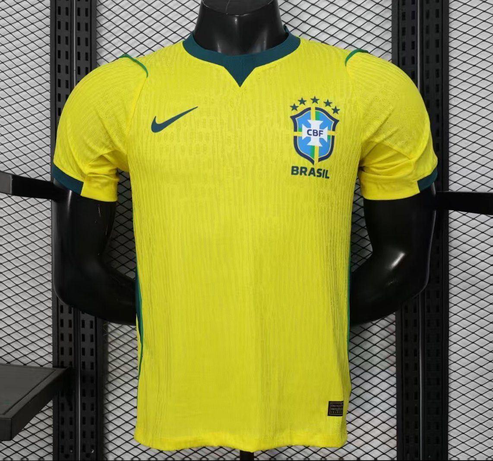
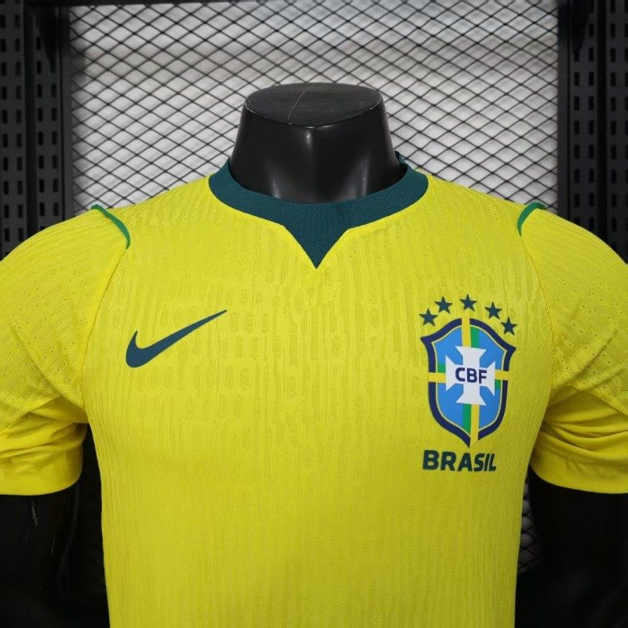

Camisas e chuteiras de futebol
Temporada 2026, clássicos retrô e chuteiras para campo, society e futsal. Cada peça é conferida antes de sair do estoque.
- Frete grátis acima de R$ 299
- Troca grátis em 30 dias
- 6x sem juros ou Pix na hora

Três jeitos de vestir o jogo
Do manto que sai do vestiário hoje à camisa que você viu levantar a taça, e a chuteira certa para o chão onde você joga.


Temporada 2026
Craques que vestiram o manto
Romário no tetra, Kaká em Atenas, Cristiano em Moscou, Mbappé no Bernabéu e Lamine Yamal no novo Camp Nou. Conheça as histórias e vista a mesma camisa.
A camisa que virou história
A amarelinha do tetra em 94, a Viola roxa de 98/99, o Santos tricampeão da América em 2011 e o Manchester United campeão europeu em Moscou. Reedições com o corte da época, para vestir ou guardar.
Ver a Coleção RetrôQual chuteira é a sua?
Escolha o chão onde você joga. A sola certa dá tração, protege o joelho e dura mais.
Campo
- Onde
- Grama natural
- Travas
- Altas, cônicas ou em lâmina, que entram no gramado
- Evite
- Grama sintética e quadra: a trava alta prende e força o joelho

Conferida antes de sair
A Joga Bonito começou vendendo camisas pelo Instagram. O cuidado de abrir caixa por caixa continua: nenhuma peça sai sem passar por esta conferência.
- Escudo e patches bordados sem fio solto
- Costuras de gola, punho e barra alinhadas
- Tamanho medido contra o nosso guia
- Etiqueta e embalagem lacradas com o número do pedido
O futebol é de todo mundo
- Libras no site inteiro
- O botão do VLibras traduz qualquer página para Língua Brasileira de Sinais.
- Letra maior e alto contraste
- Os botões A−, A+ e de contraste, no topo de toda página, ajustam a leitura e ficam salvos para a próxima visita.
- Respeito em campo
- Campanhas com torcedores de todas as origens, corpos e gêneros. Discriminação aqui é cartão vermelho.
- Joga Junto
- 1% de cada pedido vai para escolinhas de futebol em comunidades. O valor fica registrado em cada compra.
Antes de comprar
A camisa é original?
Trabalhamos com camisas oficiais e com reedições retrô licenciadas. Cada peça é inspecionada antes do envio e acompanha nota fiscal.
E se o tamanho não servir?
A primeira troca de tamanho é grátis em até 30 dias após o recebimento. Antes de comprar, confira o .
Quanto tempo demora para chegar?
Pedidos pagos até as 14h saem no mesmo dia útil. Capitais do Sudeste recebem em 2 a 4 dias úteis; demais regiões, de 4 a 9. O código de rastreio aparece em “Meus pedidos”.
Como sei qual chuteira comprar?
Pelo chão onde você joga: campo (grama natural), society (grama sintética) ou futsal (quadra). Use o seletor de chuteiras acima.
Quais são as formas de pagamento?
Pix com aprovação imediata, cartão de crédito em até 6x sem juros e cartão de débito.